記事・リンクを検索
⌘K
Houdiniを使った背景（環境）制作のチュートリアル・Tipsを一箇所に。スキャッター・地形生成・植生など、工程別に散らばっていた記事をまとめています。
48 件のポストを収録 · 最終更新: 2026-08-28
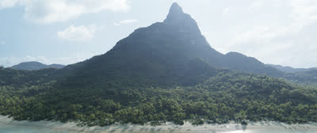
Spade&Co. 木川裕太氏による個人制作「Island」の技術解説記事。
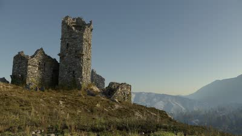
Houdiniを用いたモデリングからレンダリングまでの背景制作ワークフローを体系的に学べるコース。
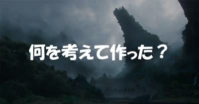
海外のCGアーティスト向けYouTubeチャンネル「CG Forge」で紹介された、杉﨑亮太氏の自主制作「Breath of the Ancient Earth」。制作プロセスのQ&Aと、普段の作品収集・リファレンス管理についてもnoteでまとめられている。
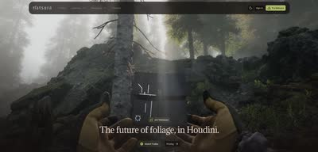
Houdini内でプロシージャルに植生を生成できるツールキット「Natsura」。インポート/エクスポートの手間がなく高品質で、いわば「SpeedTreeのHoudini完結版」だとしている。KTT（Gaea相当）同様、Houdini内で完結するツールが増えている傾向にも触れている。
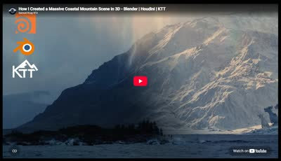
Samuel Krug氏によるチュートリアル「How I Created a Massive Coastal Mountain Scene in 3D」。技術的な側面だけでなく、書籍の描写を基にした再現や試行錯誤の過程も見られる点をおすすめしている。
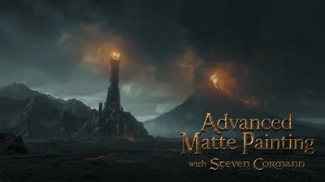
ILMやDNEGでの勤務経験を持つSteven Corman氏が、Double Jump Academyで新しい背景制作チュートリアル「Advanced Matte Painting」をリリースしたこと。使用ソフトはHoudini、Maya、Gaea、Nuke、Photoshop。
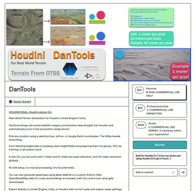
実地形生成HDAの正式リリース。アメリカ国内では1m/pixelまたは10m/pixel、世界中では30m/pixelの解像度で地形を生成できる。SplatmapsはMeta SAM AIかカスタムのPython HDAで生成できる。
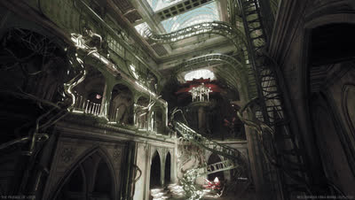
HoudiniとUE5を使って精緻な蓮（Lotus）のシーンを制作した過程を解説する80lvの記事。ArtStationにも制作ブレイクダウンが公開されている。
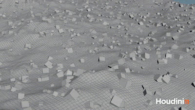
岡崎昇平氏による、地形生成以外のHeight Fieldの変わった使い方を紹介する記事。Height Fieldが軽量でUVも扱いやすく、booleanのshatterに適しているという点が勉強になった。

Matt Barker氏による、リファレンス写真からHoudiniでScatterする手法。写真をカメラプロジェクションし、そこにScatterして写真の色をポイントに持たせ、木のタイプに応じてポイントをソートするという3ステップの流れが解説されている。
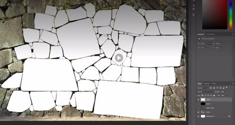
『アサシンクリード シャドウズ』で使用された、2Dマスクから3Dモデルを生成するHDA「Procedural Rock Wall Tool」。写真から岩壁のマスクを作り、Houdiniでディテールを追加後、Zbrushでさらにディテールを足すワークフローが採用されていたと推測している。

木の葉のレンダリング時間を、Geometry（16秒）、Stencil（27秒）、Opacity/Texture（2分35秒）の3手法で比較検証。Solarisでは、Scatterする場合はAlphaでモデルをカットアウトし、それ以外はOpacityなしで使うのが最適ではないかと考察している。

崖に草を生やすマスクを作成する際、Normalマスクだけでなく AOマスクも併用することで、よりリアルな結果が得られるというTips。
PixarのEnvironment Leadによる、USDについて解説した動画「USD Building Asset Pipelines」。
松の木を生成できるHoudini用HDA「Pine Tree Generator」が年内にリリース予定である。
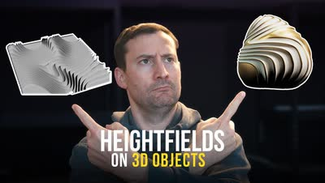
HoudiniのHeightfieldの面白い活用方法を解説するチュートリアル「Hacking Heightfields」。
Houdiniを使ってプロシージャルに道路網を生成するチュートリアル。
幻想的な世界の環境制作を学べるコース「3D Environments: Create Otherworldly Fantasy Lands」。最終レンダリングはClarisseだが、Maya・Houdini・Nukeについても学べる内容。
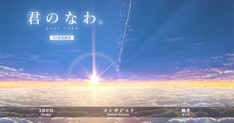
Houdiniを使って映画『君の名は。』のPVの背景をフル3Dで再現した制作過程を解説するnote記事。まだ全部読めていないが、試行錯誤の過程が勉強になるとしている。
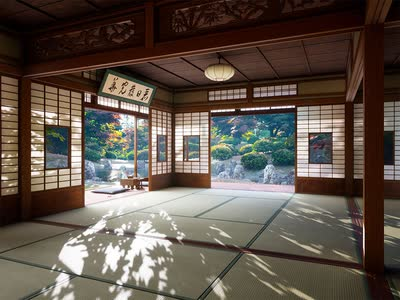
スクウェア・エニックスによる、Houdini×UE4を使ったプロシージャル背景制作の記事「Procedural Environment『1,000の和室』」。
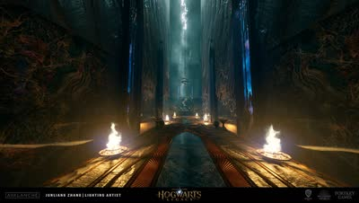
『Hogwarts Legacy』や『Diablo』に携わったJunliang Zhang氏による、HoudiniとUE4を組み合わせたプロシージャル環境制作の記事。
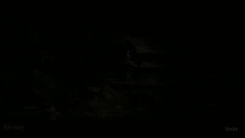
作品「Whispers of the Forgotten Temple」の制作プロセスを解説したブレイクダウン。Houdiniが様々な箇所で使用されている。
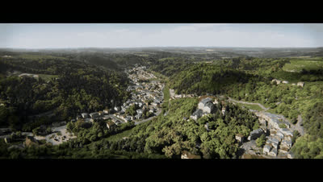
Yen Chen氏のArtStationページ。クオリティの高い背景作品が多く掲載されている。
ILMのGeneralist、Yen Chen氏が自身の作品制作に使用したHDA「CH Tools」を無料公開していること。Scatterに重要な機能が多く含まれている。
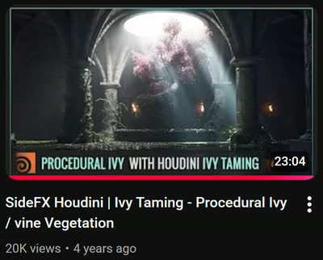
Ivy Tamingプラグインの使い方を、Adrien Lambert氏が丁寧に解説した動画。
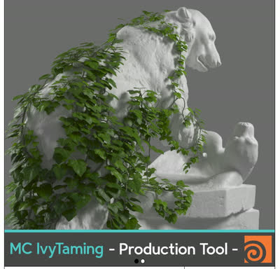
HoudiniでIvy（ツタ）を生成できるHDA「Ivy Taming 1.1」。『The Last of Us』などハリウッドのプロダクションでも使用されている。
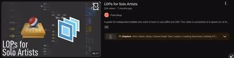
個人制作でSolarisを使いたい人向けのチュートリアル「LOPs for Solo Artists」。
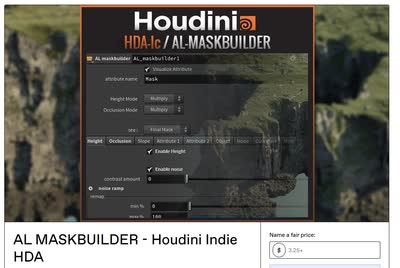
Adrien Lambert氏による、マスクを作成できるHoudini用HDA「AL MASKBUILDER」。ScatterやShadingで使えるマスク作成機能が詰まっている。
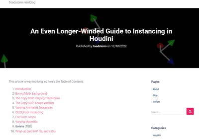
HoudiniのInstanceについて体系的に理解するのに役立った記事「An Even Longer-Winded Guide to Instancing in Houdini」。
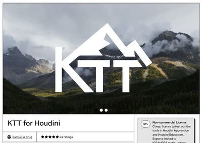
Samuel A Krug氏による地形生成HDA「KTT for Houdini」。従来のHoudiniやGaeaでは難しい表現が可能になるとしている。
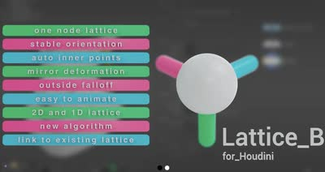
HoudiniでのLattice操作を簡単にするHDA「Lattice_B for Houdini」。
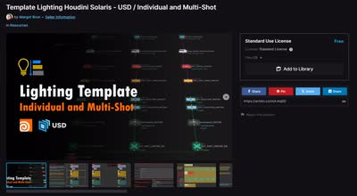
Houdini Solaris向けのライティングテンプレート。単一ショット用だけでなく複数ショット用のテンプレートもある。
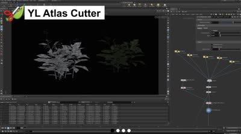
OpacityMapを使ってメッシュをカットアウトできるプラグイン「YL Atlas Cutter」。
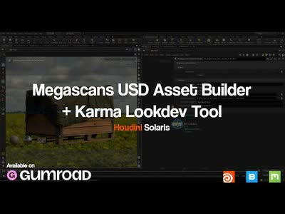
MegascansのアセットをUSDに変換し、LookDevまで行えるHoudini用のHDAツール。
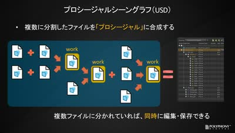
安藤恵美氏によるUSD/Solarisについての講演動画。2018年のものだが、USDの基本概念の理解が深まる内容。
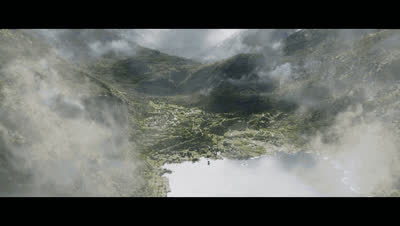
ILMロンドン所属のGeneralist、Yen Chen氏による作品の制作プロセス。使用ソフトはHoudini、Nuke、および（現在は使用できない）Clarisse。
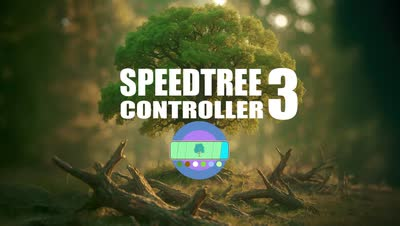
SpeedTreeでアニメーションやシミュレーションを行えるプラグイン。
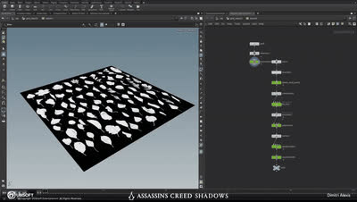
HoudiniでMegascansのAtlas機能を使って葉っぱのアセットを作成する手法。この手法はゲーム『アサシンクリード』でも使用されている。Megascansは葉っぱ系アセットの種類が少ないため、こうしたテクニックが役立つとしている。
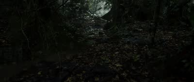
ILMのJunior GeneralistであるLucas Piazzini氏のXアカウント。ArtStationでの詳しい背景制作解説に加え、コンテスト「Rampage Rally」で3位に入賞した作品も紹介されている。
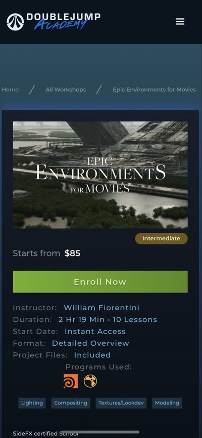
Double Jump Academyで公開されている、William氏によるHoudiniを使った背景制作のチュートリアル「Epic Environments」と「Environments for Beginners」。
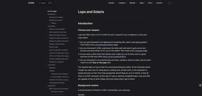
HoudiniのLOPsとSolarisについて詳しくまとめられた英語記事（cgwiki）。
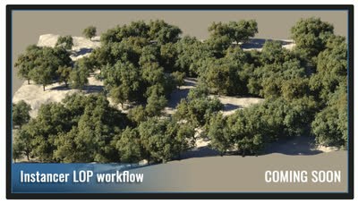
Adrien Lambert氏のSolarisチュートリアルに、SpeedTreeのLookDevからScatterまでカバーするInstancer関連コンテンツが追加され、Part4まで公開されている。
Blizzard EntertainmentのPrincipal Digimatte ArtistであるAdrien Lambert氏による、Houdini SolarisでのUSD・環境制作ワークフローを学べるサブスクリプション形式のチュートリアル。月額¥622〜で視聴可能。
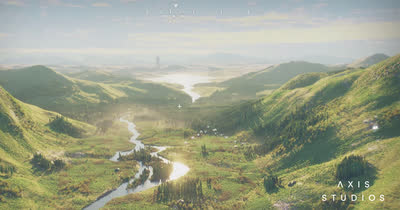
80lvに掲載された記事と、RebelwayでEnvironment Creation in Houdiniコースを担当するJames Hodgart氏。
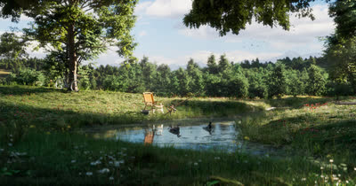
Houdiniを使った環境アート制作について、穏やかな漁村シーンのセットアップを例に解説する80lvの記事。
大規模な2D環境をHoudiniとNukeを使って3Dで再現する手法を解説した80lvの記事。
80lvに掲載された、Houdiniを使った背景制作ワークフローの記事。地形生成から建物配置、USDでのコンポジションまで解説されている。
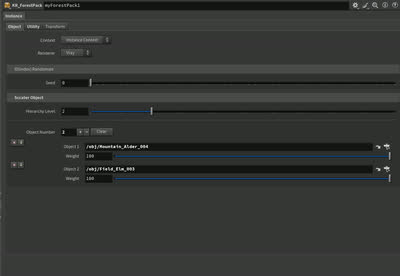
背景制作に欠かせないScatterツール。木川氏の記事を基に、いくつか機能を追加して作成した。詳細はNotionページにまとめられている。